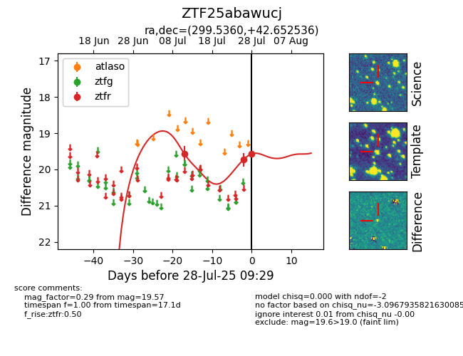

Target ZTF25abawucj at 2025-08-05 23:02, see:
FINK: fink-portal.org/ZTF25abawucj
Lasair: lasair-ztf.lsst.ac.uk/objects/ZTF25abawucj
ALeRCE: alerce.online/object/ZTF25abawucj
alt names
ZTF25abawucj (ztf,fink)
coordinates:
equatorial (ra, dec) = (299.5360,+42.65254)
galactic (l, b) = (77.7160,+6.95632)
photometry
last ztfr=19.65
5 ztfr detections
